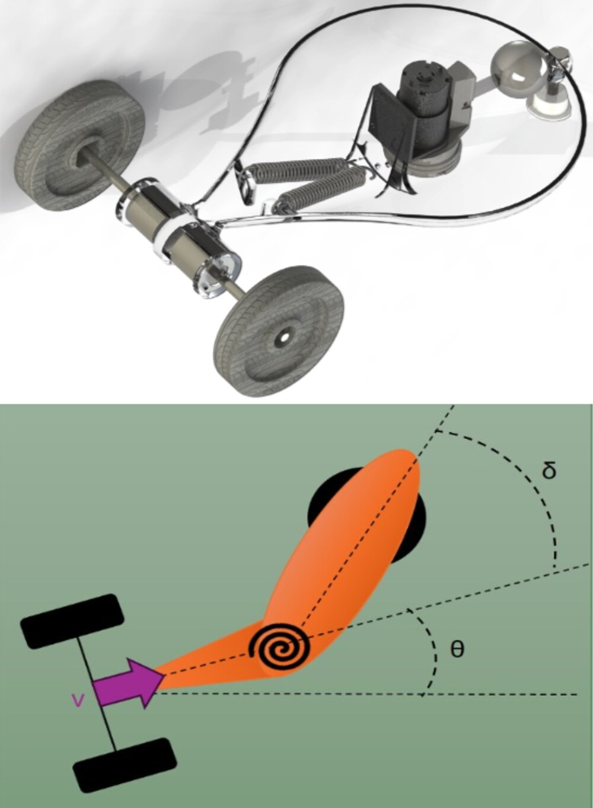
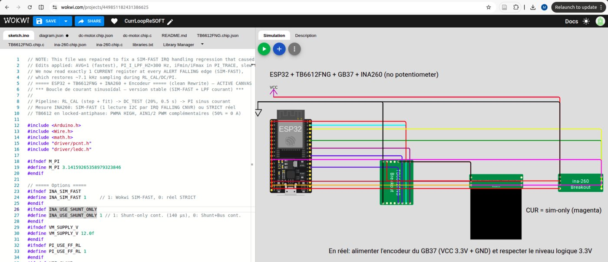
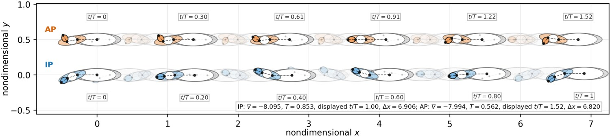

Natural Locomotion Manifolds at ENSTA / Lab-STICC.
Robotics PhD candidate - ENSTA / Institut Polytechnique de Paris
Natural locomotion and nonlinear robot dynamics.
I study how mechanical systems can select efficient gait families before control, optimization or learning. My work connects nonholonomic mechanics, nonlinear modes, hybrid-contact locomotion, simulation, control and real robot validation.


ENSTA, Institut Polytechnique de Paris, robotics track.
Agrégation-qualified, with Computer Vision, 3D Vision and C++ teaching.
Third prize at the French Young Robotics Researchers meeting.
Research
Mechanics first, control second.
My doctoral work formulates natural locomotion through internal recurrence, pose drift and cyclic exchange balance between an internal oscillator and the environment-mediated propulsive channel.
Natural Locomotion Manifolds
Closed/open construction for identifying gait families in conservative nonholonomic systems, with certification through recurrence, exchange balance, modal identity and nonzero displacement.
Nonlinear modes and resonance
Nonlinear normal modes, periodic orbit continuation, frequency-response analysis and phase criteria for energy-efficient locomotion under losses.
Hybrid and compliant locomotion
Extension of the same principle toward walkers and legged systems with intermittent contact, impact/reset maps, elastic storage and controlled compensation.
Simulation to robot
Numerical simulation, model calibration, ROS/C++/Python workflows, sensors, actuators and hardware validation across mobile, marine and legged platforms.
Publications
Selected work
Earlier publications may appear under my former name, Mirado Rajaomarosata.
2026
arXiv:2605.28254
Natural Locomotion: Principle and Method
Mirado Mortel, Luc Jaulin, Lionel Lapierre, Simon Rohou. Preprint.
2025
DOI
Natural efficient gaits from Nonholonomic Locomotion Nonlinear Normal Mode: The Pendrivencar case
Mirado Rajaomarosata, Luc Jaulin, Lionel Lapierre, Simon Rohou. Mechatronics, 110, 103366.
2025
DOI
Energy-Efficient Nonholonomic Fish Robot: Nonlinear Forced Oscillations
Mirado Rajaomarosata, Luc Jaulin, Lionel Lapierre, Simon Rohou. IEEE OCEANS 2025 Brest.
Projects
Robots, models and validation loops.
A selection of systems where modeling, simulation, sensors, control software and hardware constraints meet.

EquiLeap - 1.2 m wheeled biped
Full mechatronic build with four-bar synthesis, Lagrangian modeling, balance-control-oriented prototyping, IMU/Hall sensing and real-time loops.
Repository
EDF inspection robot - ROS / RTAB-Map
Mobile inspection platform for hydraulic pipes with RealSense sensing, graph-based visual SLAM, C++/Python, ROS/Linux and curvature diagnostics.

Shiva Exo V2 - assistive exoskeleton
Mechanical analysis, buckling-spring force characterization, test bench, Simscape Multibody model and variable-assistance concept.

currLoop - current/torque simulation
ESP32, H-bridge logic, current sensing, encoder feedback and motor physics toward sinusoidal PI current control and resonance-oriented actuation.

Cinclus-23 - aerial-underwater drone
Project and mechatronic-design lead for a carbon/epoxy fixed wing with Pixhawk/RPi/MAVLink architecture and validated flight/swim transitions.

Natural Locomotion diagnostics
Continuation, modal certification, pair-plot diagnostics and trajectory reconstruction for two- and three-segment nonholonomic gait families.
PreprintCV
Education and experience
PhD in Robotics, expected 2026
ENSTA / Institut Polytechnique de Paris - Natural Locomotion Manifolds, nonlinear dynamics, nonholonomic mechanics and mechanics-aware control.
Probationary lecturer and lead instructor
Agrégation-qualified; lectures, tutorials, practical sessions and supervision in Computer Vision, 3D Vision and C++ for engineering students.
Soft-continuum and hybrid-contact extensions
CKte Beam and walker-oriented studies connecting Cosserat/Kirchhoff modeling, impact/reset maps, stride diagnostics and phase/resonance-based control.
EquiLeap - wheeled biped
Full mechatronic design and build of a 1.2 m platform with Lagrangian modeling, balance-control prototyping, sensing and real-time loops.
EDF inspection robot - visual SLAM
Four-month internship on hydraulic-pipeline inspection with RealSense sensing, RTAB-Map graph SLAM, C++/Python and ROS/Linux.
Cinclus-23 - aerial-underwater drone
Project and mechatronic-design lead for a composite fixed wing with Pixhawk/RPi/MAVLink architecture and validated air-water transitions.
ELSYS Design - embedded vision / FPGA
Six-month internship on maritime anti-collision prototyping with Zynq, camera/IMU interfacing, Linux/OpenCV and embedded electronics.
MSc in Robotics, ranked 1st
Guidance, navigation, localization, control, mobile robotics and experimentation.
ENS Rennes - Mechatronics
Mechanics, electronics, electrical engineering, automatic control and industrial computing.
MSc Dynamical Systems and Signals
University of Angers / Polytech Angers.
Contact